Console aux couleurs de l'application (à valider)
Captures de la vraie console (serveur local, compte d'essai, données d'essai : l'accueil est vide ici). Ce qui change :
- Police Inter (celle de l'application) au lieu de Sora et Jakarta.
- Couleurs de l'application : fond #0E0B1A, cartes #1A1530, violet #6D4AFF, liens lilas, vert, rose et ambre de l'application.
- Cartes pleines, sans effet de verre ni dégradé ; boutons en pilule ; pastilles de filtre comme les jours de la liste des matchs.
- Téléphone : barre du bas flottante et arrondie, comme dans l'application.
- Rien ne change dans le fonctionnement : mêmes écrans, mêmes actions, mêmes textes.
Téléphone · connexion
Avant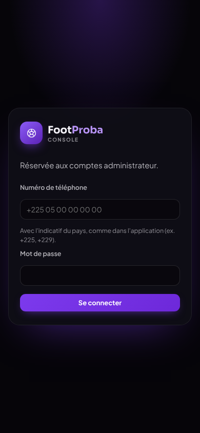
Après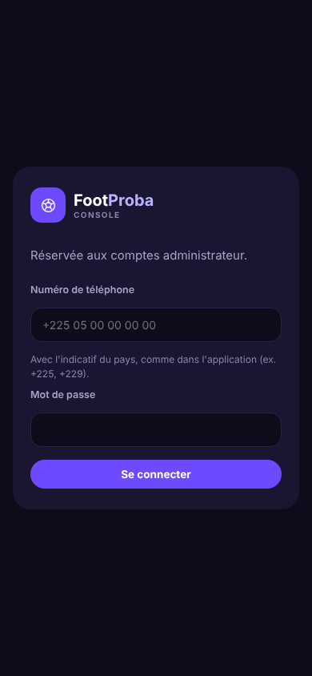
Téléphone · actions
Avant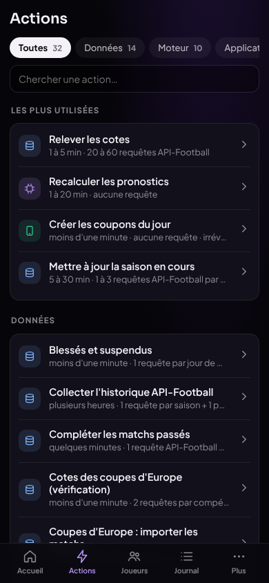
Après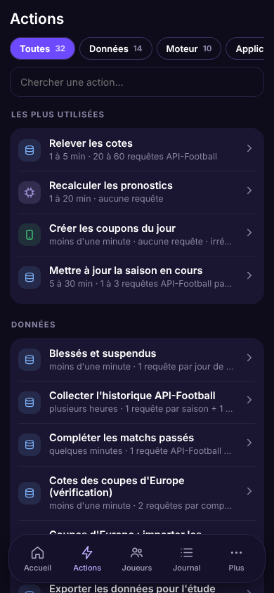
Téléphone · accueil
Avant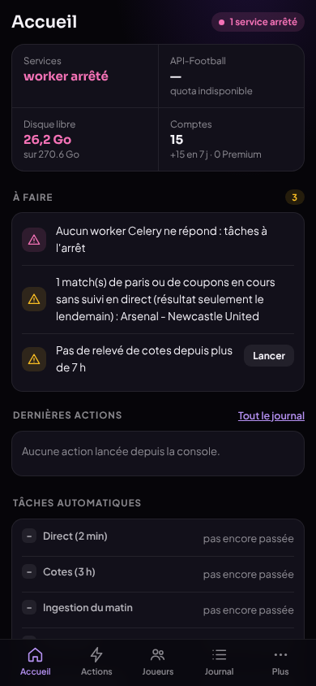
Après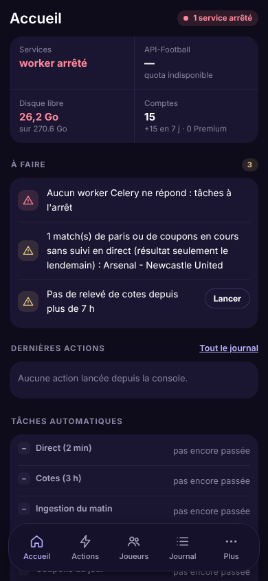
Ordinateur · une action
Avant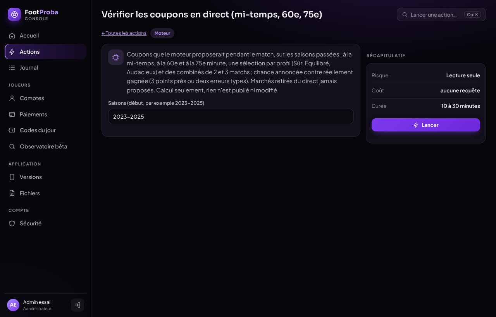
Après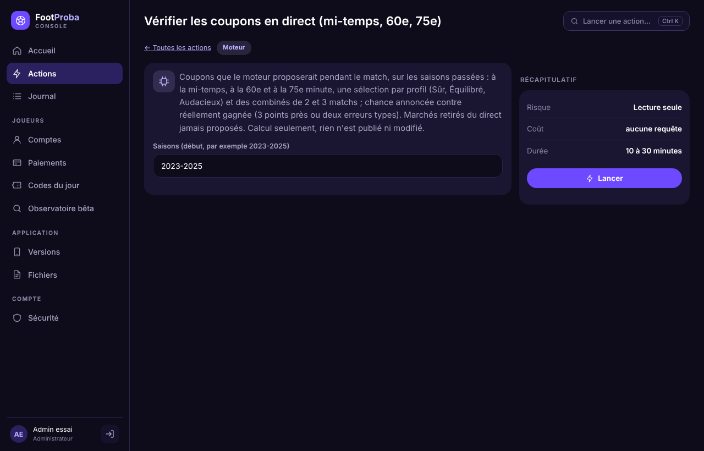
Ordinateur · actions
Avant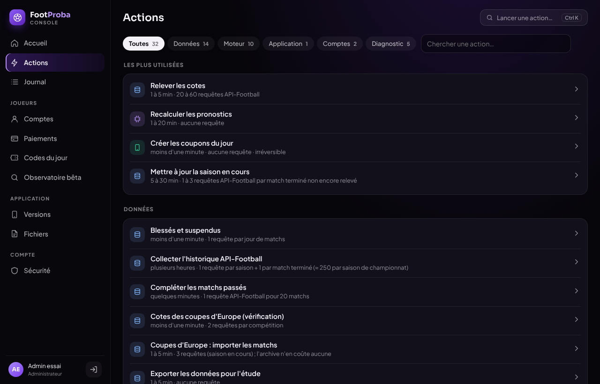
Après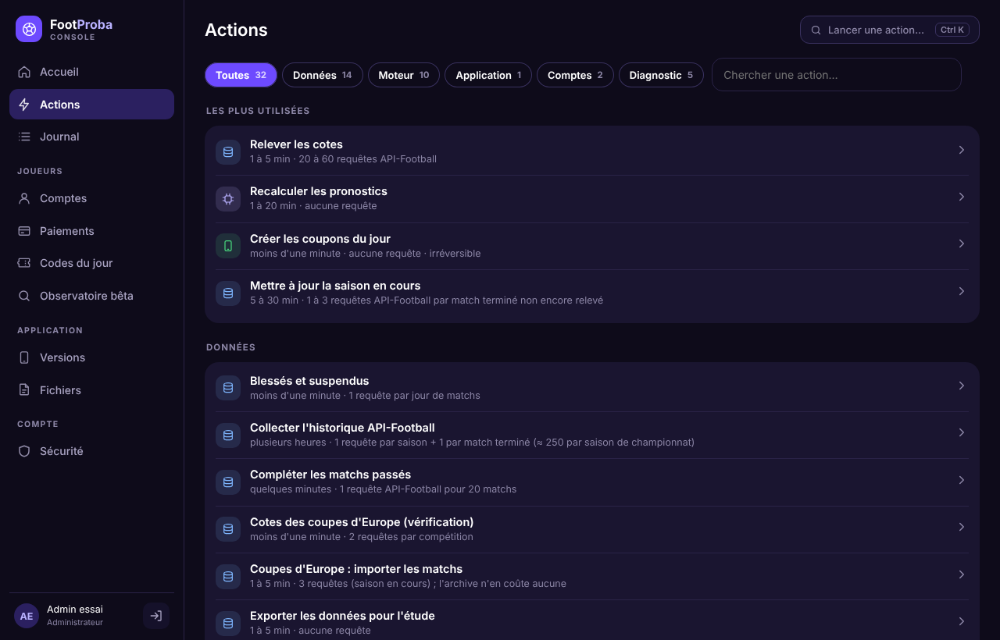
Ordinateur · accueil
Avant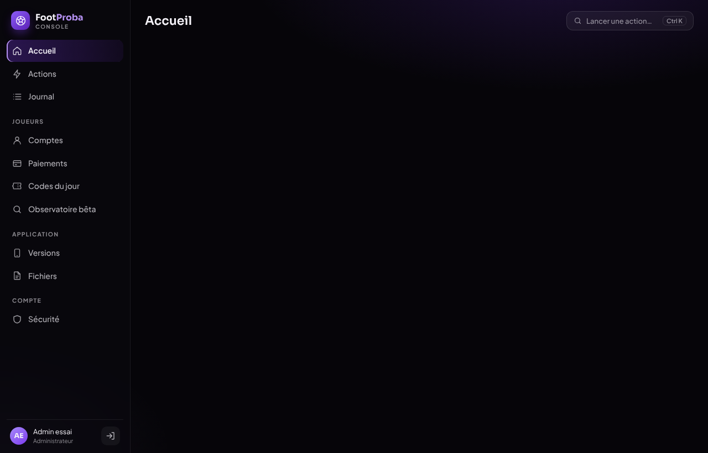
Après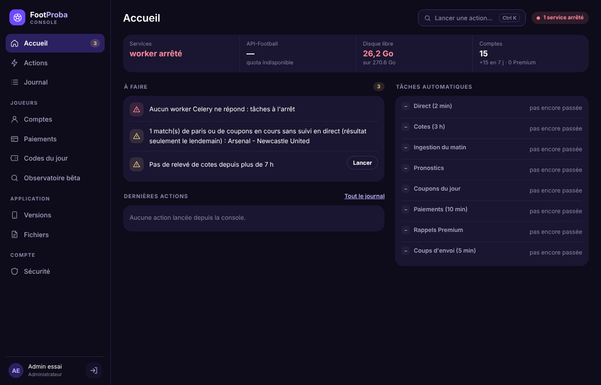